İK yazılımı ne işe yarar?
Çalışan verilerini tek merkezde toplar, onay akışlarını hızlandırır ve manuel takip yükünü azaltır.

KAPSAMLI REHBER
İK yazılımı (HRMS), işe alım, özlük, izin, puantaj, performans ve çalışan verilerini tek platformda yöneten bulut tabanlı bir sistemdir. CADRO ile işe alım döngüsü hızlanır, İK operasyonel verimliliği artar ve tüm çalışan verisi tek merkezde toplanır. İK yazılımı seçim kriterlerini aşağıda inceleyin.
Çalışan verilerini tek merkezde toplar, onay akışlarını hızlandırır ve manuel takip yükünü azaltır.
İK ekipleri, yöneticiler ve operasyon liderleri işe alımdan performansa kadar farklı süreçlerde kullanır.
Modül kapsamı, güvenlik, mevzuat uyumu, raporlama ve kullanım kolaylığı öncelikli değerlendirme alanlarıdır.
İnsan kaynakları yazılımı; çalışan bilgilerinin tek yerde tutulmasını, izin ve puantaj akışlarının daha düzenli yönetilmesini, işe alım ve performans süreçlerinin raporlanmasını sağlar. Böylece ekipler Excel dosyaları ve dağınık e-posta zincirleri yerine tek bir sistem üzerinden çalışır.
Personel kartları, departman yapısı, belgeler ve izin geçmişi aynı veri modeli içinde tutulur.
Onay akışları, işe alım adımları ve puantaj süreçleri aynı yapı içinde ilerlediği için operasyonel sürtünme azalır.
Yöneticiler ve İK ekipleri hangi süreçte ne olduğunu raporlar ve panolar üzerinden daha net izler.
MODÜL 1
Tüm İK verilerinize tek ekrandan ulaşın. Çalışan sayısı, izin durumları, açık pozisyonlar ve performans özetlerini canlı panolarla takip edin.

MODÜL 2
Tüm çalışan bilgilerini tek merkezde yönetin. Kişisel bilgiler, departman atamaları, pozisyon geçmişi ve iletişim detayları her zaman güncel kalsın.
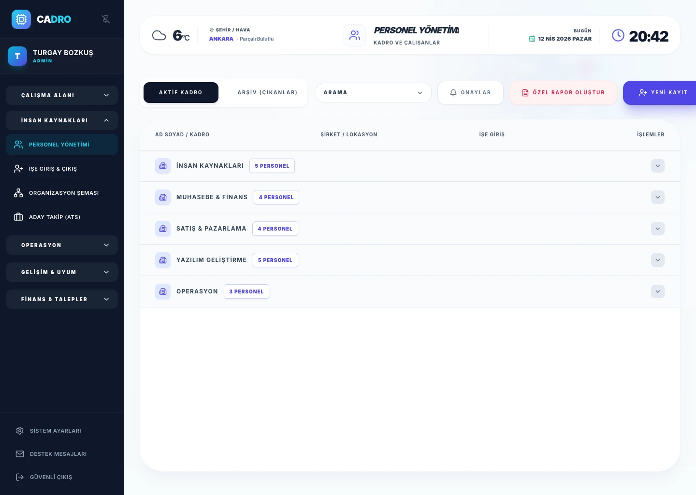
MODÜL 3
Şirket yapınızı görsel olarak haritalayın. Departmanlar, raporlama hatları ve ekip yapısı dinamik organizasyon şemasında otomatik güncellenir.
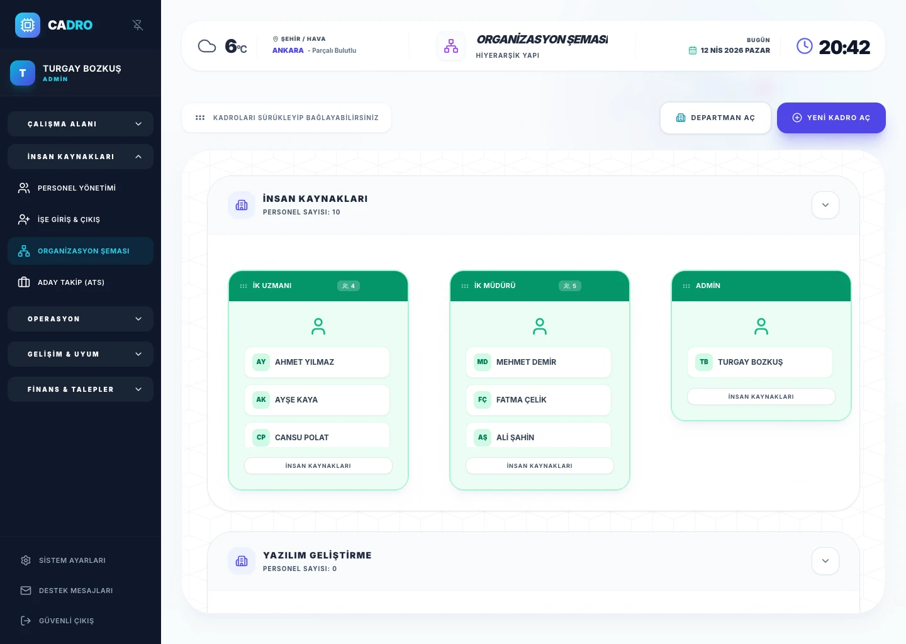
MODÜL 4
İlan çıkmaktan teklif mektubuna kadar tüm süreci yönetin. Adayları havuzda toplayın, mülakat takvimlerini otomatikleştirin ve işe alım süresini kısaltın.
ATS Modülünü İncele →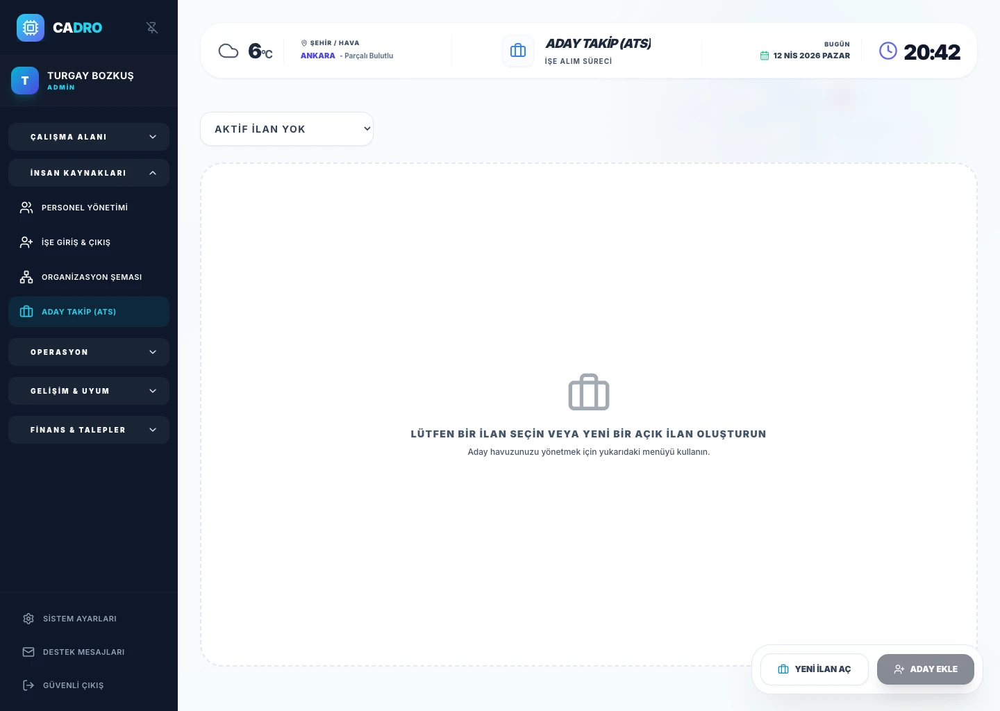
MODÜL 5
Yeni çalışanların ilk gününden itibaren sistematik bir başlangıç yapmasını sağlayın. Görev listeleri, belge toplama ve oryantasyon adımlarını otomatikleştirin.
Onboarding Modülünü İncele →
MODÜL 6
Çalışan evraklarını bulut ortamında KVKK uyumlu saklayın. Sözleşmeler, kimlik belgeleri ve sertifikalar dijital özlük dosyasında güvenle arşivlenir.
Özlük Modülünü İncele →
MODÜL 7
İzin taleplerini mobil cihazdan gönderin, tek tıkla onaylayın. Kalan izin bakiyeleri, geçmiş talepler ve puantaj entegrasyonu otomatik çalışır.
İzin Modülünü İncele →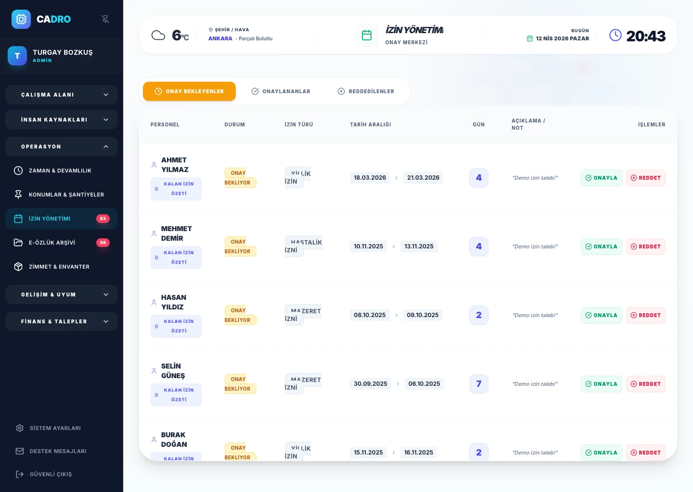
MODÜL 8
Çalışma saatlerini, vardiya planlarını ve mesai hesaplamalarını dijital ortamda yönetin. Sağlık raporu ve devamsızlık takibi dahil.
Puantaj Modülünü İncele →
MODÜL 9
Şirket hedefleriyle bireysel hedefleri (OKR) bağlayın. 360° geri bildirim, yetkinlik değerlendirme ve AI destekli analizlerle sürekli performans takibi yapın.
Performans Modülünü İncele →
MODÜL 10
Çalışan gelişim programlarını planlayın ve takip edin. Eğitim takvimi, katılım takibi ve sertifika yönetimini tek sistemde yürütün.
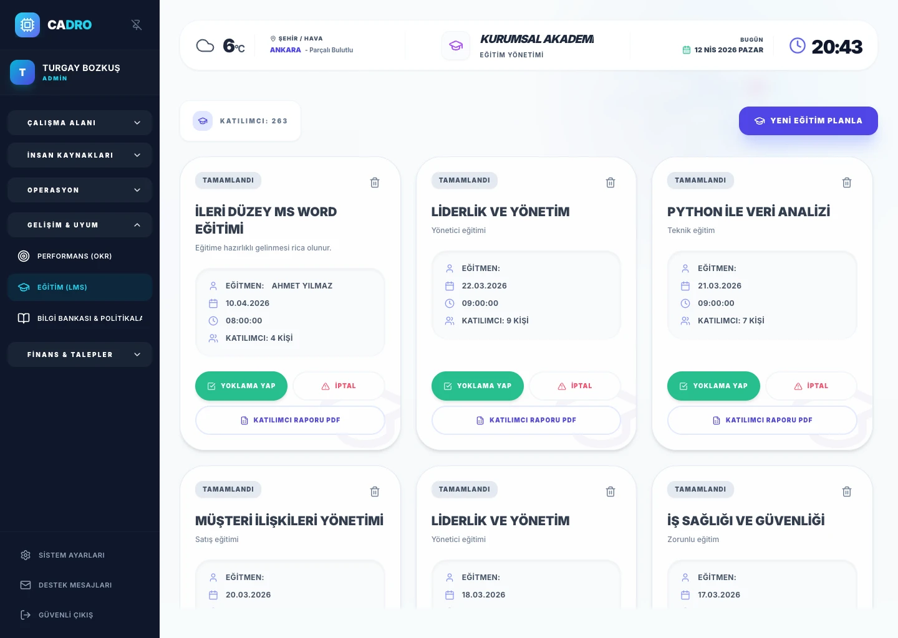
MODÜL 11
Şirket içi politika, prosedür ve kılavuzları merkezi bir bilgi bankasında yayınlayın. Çalışanlar ihtiyaç duydukları bilgiye anında ulaşsın.
Bilgi Bankası Modülünü İncele →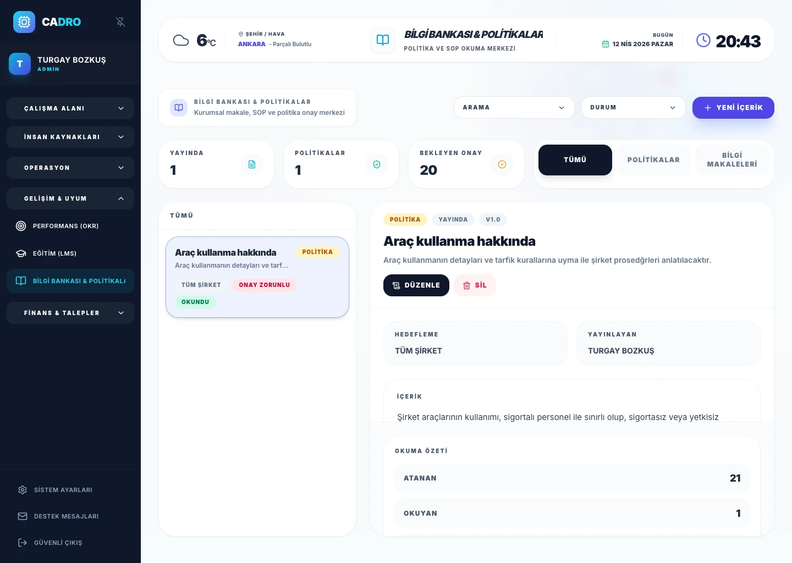
MODÜL 12
Çalışan masraf taleplerini dijital ortamda toplayın, onay akışlarıyla yönetin. Fiş ve fatura ekleri ile birlikte raporlayın.
Masraf Modülünü İncele →
MODÜL 13
Departman bazlı satın alma taleplerini oluşturun, onay zincirine gönderin ve tedarik süreçlerini şeffaf biçimde yönetin.
Satın Alma Modülünü İncele →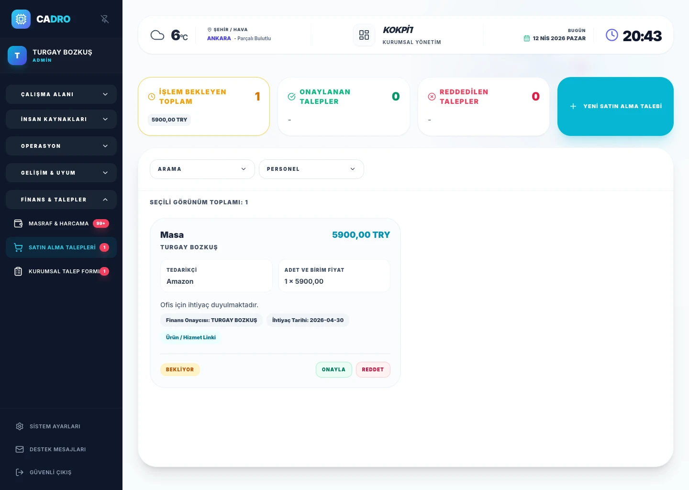
MODÜL 14
Çalışanlara teslim edilen cihaz, ekipman ve demirbaşları kayıt altına alın. Zimmet geçmişi, iade takibi ve envanter durumunu anlık görün.
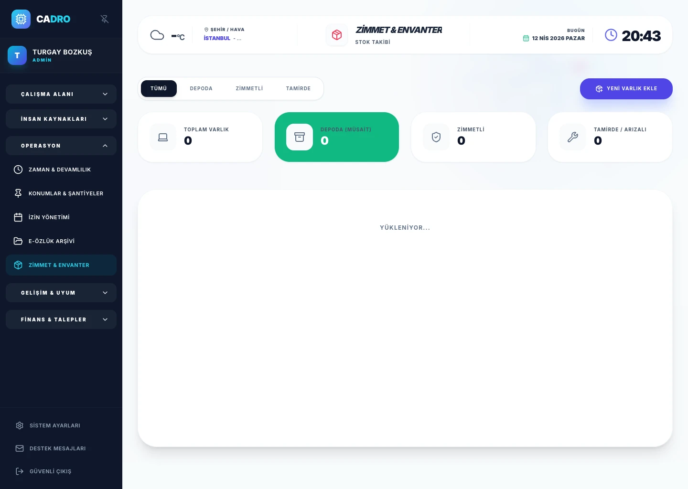
MODÜL 15
Çok lokasyonlu yapınızı merkezi olarak yönetin. Ofisler, şubeler ve sahalar arası çalışan dağılımını, kapasite ve varlık bilgilerini takip edin.
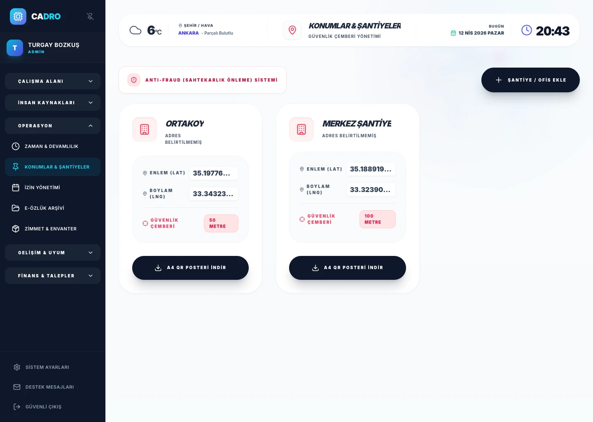
MODÜL 16
Özelleştirilebilir talep formlarıyla çalışan taleplerini standartlaştırın. İzin dışı tüm talepleri (avans, evrak, referans mektubu vb.) tek kanaldan yönetin.
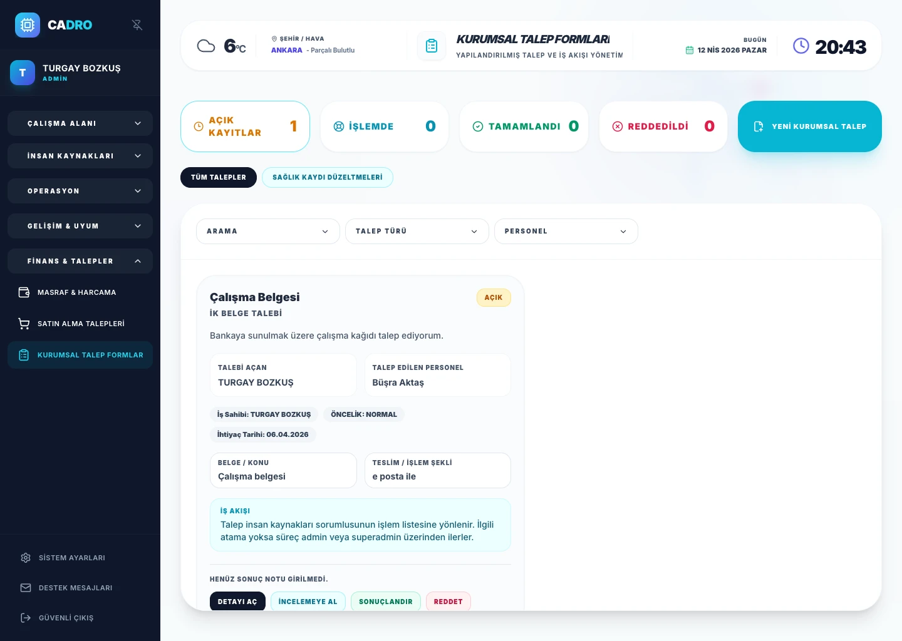
MODÜL 17
Çalışanların İK ekibine soru ve taleplerini iletebildiği dahili destek sistemi. Ticket takibi, önceliklendirme ve yanıt süreleri ile İK operasyonlarını ölçümleyin.
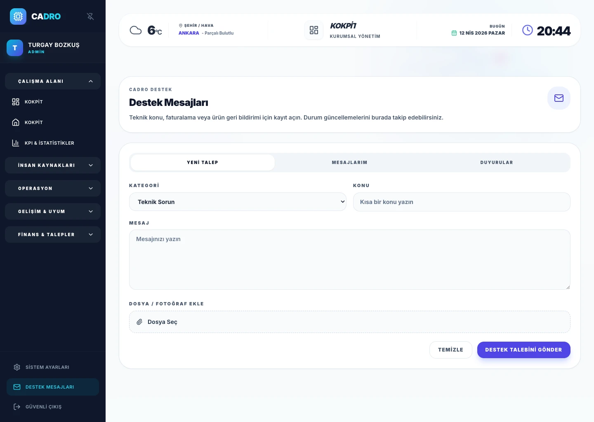
İK yazılımı yalnızca büyük kurumsal yapılar için değil; hızlı büyüyen ekipler, çok lokasyonlu şirketler, saha çalışanı bulunan organizasyonlar ve süreçlerini standartlaştırmak isteyen KOBİ’ler için de güçlü bir çözümdür.
İzin, özlük ve puantaj takibini daha düzenli hale getirmek isteyen ekipler için uygundur.
İşe alım, işe giriş ve performans süreçlerini ölçeklenebilir hale getirmek isteyen yapılar için idealdir.
Vardiya, puantaj ve belge yönetiminde merkezi kontrol arayan şirketlerde daha yüksek değer üretir.
Excel listeleri veri tutabilir; ancak izin, puantaj, belge, işe alım ve performans süreçlerini birbirine bağlı şekilde yönetemez. İK yazılımı ise bu akışları tek veri modeli üzerinde birleştirir.
Liste tutar; fakat iş akışlarını, yetkileri ve onay adımlarını doğal olarak yönetmez.
Veriyi süreçle birleştirir; izin, puantaj, belge ve işe alım adımları aynı yapı içinde ilerler.
Raporlama, görünürlük ve ekipler arası koordinasyon için daha güvenilir bir temel sunar.
Her yazılım aynı yapıda değildir. Değerlendirme yaparken modül derinliği, kullanım kolaylığı, mevzuat uyumu, güvenlik, raporlama ve iç entegrasyon gücü birlikte ele alınmalıdır.
ATS, özlük, izin, puantaj, performans ve talep akışları aynı ürün içinde ne kadar güçlü çalışıyor?
KVKK uyumu, rol bazlı erişim ve denetim izi gibi konular net biçimde tanımlanmalı.
İK ekibi kadar yöneticiler ve çalışanlar için de sade ve uygulanabilir bir deneyim sunmalı.
Çoğu zaman benzer şekilde kullanılır; ancak kapsamlı bir İK yazılımı işe alım, izin, puantaj, performans ve belge akışlarını da kapsar.
Modül kapsamı, şirket ölçeği, raporlama ihtiyaçları ve destek seviyesi fiyatlandırmada belirleyici olur.
Belge yönetimi, izin kayıtları, rol bazlı erişim ve denetim izi gibi başlıklar şirket içi düzen ve uyum açısından önem taşır.